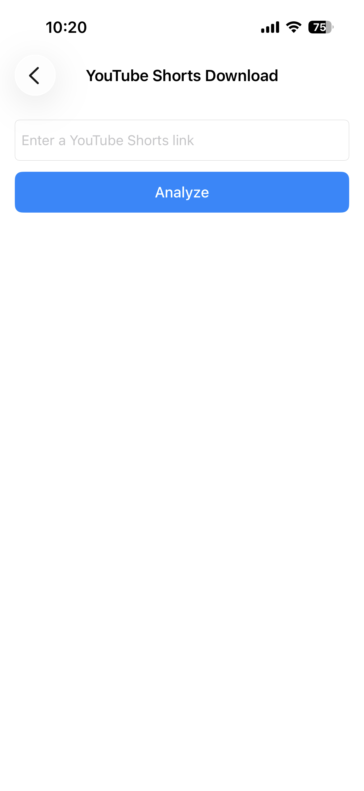
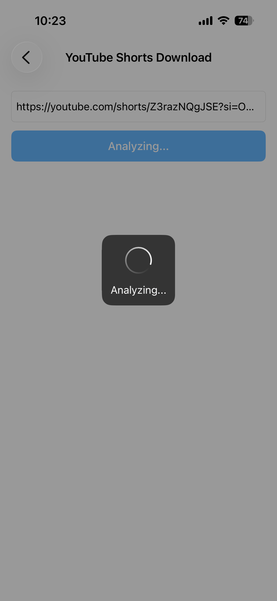
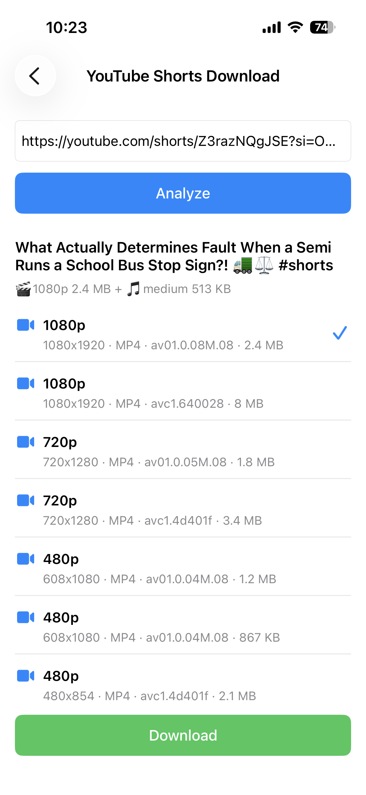

YouTube Shorts herunterladen
Du möchtest ein YouTube Short speichern, um es offline anzusehen oder später zu teilen? Mit ImageGet ist das ganz einfach. Füge einen YouTube-Shorts-Link ein, die App analysiert das Video und lädt es direkt in deine Fotomediathek – kein Bildschirmmitschnitt, keine zusätzlichen Tools. Hier erfährst du Schritt für Schritt, wie du YouTube Shorts herunterlädst.
Lade ImageGet kostenlos herunter – Shorts mit einem Tippen speichern.
ImageGet herunterladenSchritt 1: YouTube-Shorts-Link kopieren
Öffne die YouTube-App oder die Website und suche das Short, das du behalten möchtest. Tippe in der YouTube-App auf Teilen und dann auf Link kopieren. Im Browser am Computer kopierst du einfach die URL aus der Adressleiste.

Schritt 2: Link in ImageGet einfügen
Öffne ImageGet und füge den YouTube-Shorts-Link ein. Die App analysiert das Video automatisch – kein Suchen, kein langes Warten. Nach wenigen Augenblicken zeigt dir ImageGet das Short an, bereit zum Herunterladen.

Schritt 3: Short herunterladen
Tippe auf Herunterladen und wähle die gewünschte Qualität. Das Short wird als Video mit Ton in deiner Fotomediathek gespeichert. Du kannst es jederzeit erneut ansehen – auch offline, ohne YouTube zu öffnen.

Tipps zum Herunterladen von Shorts
- Kostenlose Downloads — nach der 7-tägigen Testphase erhältst du 3 kostenlose Downloads für YouTube Shorts; mit Premium sind sie unbegrenzt.
- Qualität wählen — entscheide dich zwischen verschiedenen Auflösungen, um Dateigröße und Qualität abzuwägen.
- Kein Bildschirmmitschnitt — ImageGet lädt das Short direkt herunter, es entsteht also kein Qualitätsverlust durch erneutes Aufnehmen.
FAQ
Kann ich YouTube Shorts kostenlos herunterladen?
Ja — ImageGet enthält eine 7-tägige kostenlose Testphase, danach 3 kostenlose Downloads für YouTube Shorts. Mit Premium sind die Downloads unbegrenzt.
Werden YouTube Shorts mit Ton gespeichert?
Ja — Shorts werden als Videos mit Ton in deiner gewählten Qualität gespeichert.
Muss ich den Bildschirm aufnehmen, um ein Short zu speichern?
Nein. ImageGet lädt das Short direkt herunter — ein Bildschirmmitschnitt ist nicht nötig.
Sehen. Speichern. Einfach.
Lade ImageGet kostenlos herunter und speichere YouTube Shorts mit einem Tippen.
ImageGet herunterladen